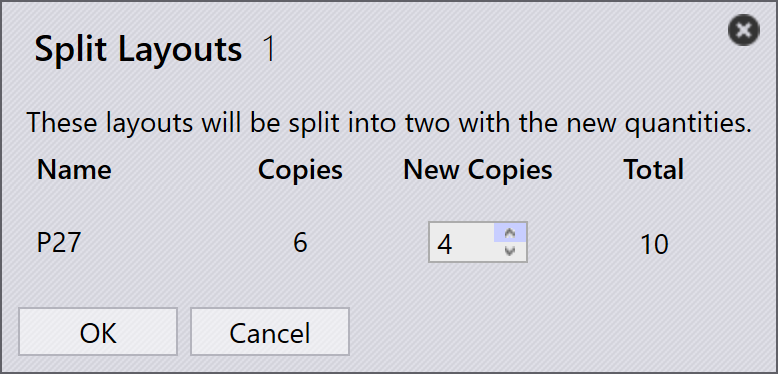

Layout panel
This section explains layout-related actions such as Send to machine, Recall from machine, Export outputs, Mark complete, Add parts…, Adapt/Compact…, Split layout, and other options used to manage layout instances.

|
|


Send to machine
-
When a nest is ready (filled or urgently needed), you can send it to the machine.
-
Right-click the nest and select Send to machine….
-
A folder is created automatically, named after the nest.
-
Output files (fxlyt, NC, report, csv) are exported to the JOB output location.
-
Send to machine nests are shown with a blue tick mark.

| Once released, those nests are no longer retried for repacking. |
Recall from machine
-
If the output needs validation or an update (for example, adding more parts):
-
Right-click the exported layout.
-
Select Recall from machine….
-
-
The output files and the folder (fxlyt, NC, report, csv) are deleted.
-
The nest becomes editable again.
-
You can make changes and send it to the machine again.

Export outputs
-
Right-click any layout (nest) that has been sent to the machine and click Export outputs.

-
The Export Outputs option exports the NC, Report, and Layout files to the respective machine output folders.
-
This option regenerates the NC file with the current unit settings for the layout.
| Export Outputs is not available for Layouts that are Completed and Layouts that are waiting in queue for repacking. |
Mark complete
-
Once the nest is processed on the machine, right-click the nest and select Mark complete….
-
You can select multiple nests and mark them as complete at the same time.
-
When a nest is marked as complete:
-
It is greyed out, moved to the end of the list, and shown with a green tick mark.
-
The layout is removed from the active layouts list.
-
Part and job statuses are updated, and processed quantities move to the completed state.
-
Output files for that layout are removed from the machine output location to avoid duplicate use.

-
Add parts…

-
Use this option to add more parts to a relatively poorly packed layout. Like Interactive Nesting, this is a wizard-driven option and can be used on a single or multiple layouts at the same time.
-
TruSmartCAM mounts the Layout repack wizard in the main work area when this option is used. Hold Ctrl key and select one or more parts to be packed on the layout(s) and press Next.

-
The selected parts are displayed in the next step with an editable quantity column. Update the part quantities if needed in the Update Qty field. Click Next to proceed to the nesting. Note that quantities can only be increased, not decreased.

-
All the layouts are nested separately, and the nested results are displayed with the newly packed parts placed onto them. Selecting the layout displays all the existing layout parts. The result is auto-discarded if no new part is placed during the repacking. A layout with multiple copies may result in different patterns after the repacking.

Adapt/Compact…
-
This wizard-based command can be used to adapt a layout from one machine to another when the original machine is down or when machine workload needs to be balanced.

-
It can be used when the sheet planned for is out of stock and the layout needs to be replanned on another available sheet.
-
You can merge layouts packed on smaller sheets onto larger sheets to use material more efficiently.
-
You can split layouts packed on larger sheets into smaller sheets if large sheet stocks are not available.
-
You can enhance the packing efficiency of multiple layouts (even from different machines) by merging them together.
-
To use it, select one or more layouts and click Adapt/Compact… to open the wizard in the work area.

-
The left pane shows all selected layouts and the Parts pane shows the layout parts.

-
Select the target machine and sheet material, then click next to perform the renesting.
-
The new nest results are shown in the results pane.

-
Click next to save the adapted or compacted layout.

Splitting a layout
The Split layouts… option enables you to split an existing layout into multiple layouts by modifying quantities, without the need to redo tooling or nesting.
This feature is particularly useful in the following scenarios:
-
When you need to produce a portion of the total quantity immediately while scheduling the remaining quantity for later production.
-
When production requirements need to be distributed across multiple shifts or days to optimize workflow and resource utilization.
-
When a specific machine is temporarily unavailable or occupied, and you need to adjust the layout to accommodate the current production constraints.
To split a layout, perform the following steps:
-
In the Layouts view, select the required layout.

-
Click Split layouts….

-
Enter the required value in New Copies.

-
Click OK.

The selected layout is now split into two layouts with adjusted quantities.